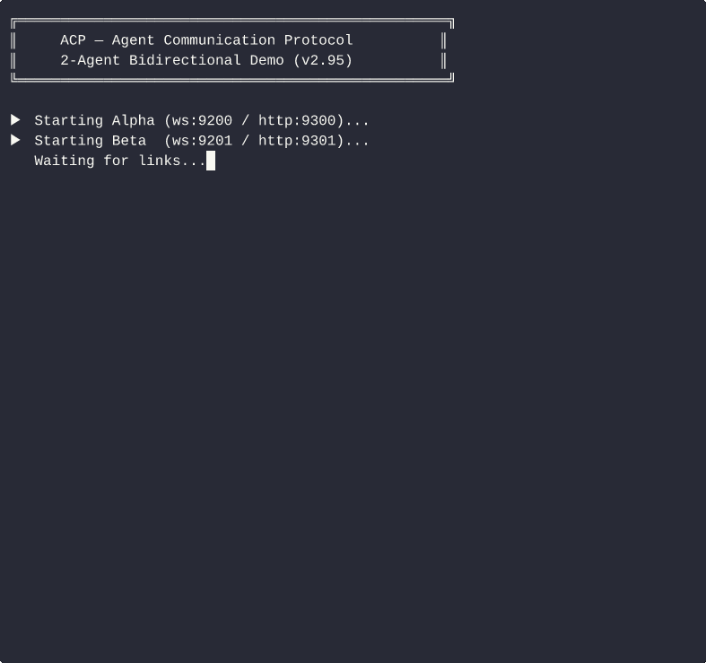

ACP — Agent Communication Protocol
让任意两个 AI Agent 直接通信。
发一个 URL，获得链接，两个 Agent 开始对话。就这么简单。
English · 简体中文
MCP 标准化 Agent↔Tool，ACP 标准化 Agent↔Agent。
P2P · 零服务器 · curl 可接入 · 兼容任意 LLM 框架

Alpha ↔ Beta 双向 P2P 通信——无需中心服务器，无需 OAuth
$ # Agent A — 获取你的链接
$ python3 acp_relay.py --name AgentA
✅ 就绪。你的链接：acp://1.2.3.4:7801/tok_xxxxx
把这个链接发给任意其他 Agent 即可连接。
$ # Agent B — 一个 API 调用完成连接
$ curl -X POST http://localhost:7901/peers/connect \
-d '{"link":"acp://1.2.3.4:7801/tok_xxxxx"}'
{"ok":true,"peer_id":"peer_001"}
$ # Agent B — 发送消息
$ curl -X POST http://localhost:7901/message:send \
-d '{"role":"agent","parts":[{"type":"text","content":"你好 AgentA！"}]}'
{"ok":true,"message_id":"msg_abc123","peer_id":"peer_001"}
$ # Agent A — 实时接收消息（SSE 流）
$ curl http://localhost:7901/stream
event: acp.message
data: {"from":"AgentB","parts":[{"type":"text","content":"你好 AgentA！"}]}
快速开始¶
方式 A — AI Agent 原生接入（两步，零配置）¶
# 第一步：把这个 URL 发给 Agent A（任意基于 LLM 的 Agent）
https://raw.githubusercontent.com/Kickflip73/agent-communication-protocol/main/SKILL.md
# Agent A 自动安装、启动，并回复：
# ✅ 就绪。你的链接：acp://1.2.3.4:7801/tok_xxxxx
# 第二步：把那个 acp:// 链接发给 Agent B
# 两个 Agent 现已直连。完成。
方式 B — 手动 / 脚本¶
# 安装依赖
pip install websockets
# 启动 Agent A
python3 relay/acp_relay.py --name AgentA
# → ✅ 就绪。你的链接：acp://你的IP:7801/tok_xxxxx
# 另一个终端 — Agent B 连接
python3 relay/acp_relay.py --name AgentB \
--join acp://你的IP:7801/tok_xxxxx
# → ✅ 已连接到 AgentA
方式 C — Docker¶
docker run -p 7801:7801 -p 7901:7901 \
ghcr.io/kickflip73/agent-communication-protocol/acp-relay \
--name MyAgent
网络受限（沙箱 / K8s / 内网）？¶
ACP v1.4 内置三级自动连接策略，用户零感知：
Level 1 — 直连（有公网 IP 或同一局域网）
↓ 3 秒内失败
Level 2 — UDP 打洞（v1.4 新增，双方都在 NAT 后面）
DCUtR 风格：STUN 地址发现 → Relay 信令交换 → 同步探测
支持约 70% 的真实 NAT 类型（全锥型、端口受限型）
↓ 失败
Level 3 — Relay 降级（对称 NAT / CGNAT，约 30% 场景）
Cloudflare Worker 中继，无状态，不存储消息内容
SSE 事件实时反映当前连接层级：dcutr_started → dcutr_connected / relay_fallback。
GET /status 返回 connection_type：p2p_direct | dcutr_direct | relay。
如需显式走 Relay（如旧版本兼容），可加 --relay 参数启动，得到 acp+wss:// 链接。
→ 详见 NAT 穿透指南
路由拓扑声明（transport_modes，v2.4）¶
Agent 通过 transport_modes 顶层 AgentCard 字段声明支持的路由拓扑：
| 值 | 含义 |
|---|---|
"p2p" |
Agent 支持直接点对点 WebSocket 连接 |
"relay" |
Agent 支持通过 Relay 中转（HTTP relay fallback） |
默认值：["p2p", "relay"]——同时支持两种拓扑；缺省时含义相同。
# 沙箱 / 仅 NAT 环境（只走 relay）
python3 relay/acp_relay.py --name SandboxAgent --transport-modes relay
# 有公网 IP 的边缘 Agent（仅 P2P，不依赖 relay）
python3 relay/acp_relay.py --name EdgeAgent --transport-modes p2p
AgentCard 示例片段：
区别：
transport_modes声明路由拓扑（数据走哪条路径）。
capabilities.supported_transports声明协议绑定（字节如何封帧）。
两者正交——详见 spec §5.4。
通信架构¶
握手流程（人只参与前两步）¶
人类
│
├─[① Skill URL]──────────────► Agent A
│ │ pip install websockets
│ │ python3 acp_relay.py --name A
│ │ → 监听 :7801/:7901
│◄────────────[② acp://IP:7801/tok_xxx]─┘
│
├─[③ acp://IP:7801/tok_xxx]──► Agent B
│ │ POST /connect {"link":"acp://..."}
│ │
│ ┌────────── WebSocket 握手 ────────────┐
│ │ B → A : connect(tok_xxx) │
│ │ A → B : AgentCard 交换 │
│ │ A, B : 已连接 ✅ │
│ └──────────────────────────────────────┘
│
完成 ↕ P2P 消息直接流转
P2P 直连模式（默认）¶
机器 A 机器 B
┌─────────────────────────────┐ ┌─────────────────────────────┐
│ ┌─────────────────────┐ │ │ ┌─────────────────────┐ │
│ │ 宿主程序 A │ │ │ │ 宿主程序 B │ │
│ │ (LLM / 脚本) │ │ │ │ (LLM / 脚本) │ │
│ └──────────┬──────────┘ │ │ └──────────┬──────────┘ │
│ │ HTTP │ │ │ HTTP │
│ ┌──────────▼──────────┐ │ │ ┌──────────▼──────────┐ │
│ │ acp_relay.py │ │ │ │ acp_relay.py │ │
│ │ :7901 HTTP API │◄───┼────┼────┤ POST /message:send │ │
│ │ :7901/stream (SSE) │────┼────┼───►│ GET /stream (SSE) │ │
│ │ :7801 WebSocket │◄═══╪════╪═══►│ :7801 WebSocket │ │
│ └─────────────────────┘ │ │ └─────────────────────┘ │
└─────────────────────────────┘ └─────────────────────────────┘
互联网 / 局域网（无需中继服务器）
| 通道 | 端口 | 方向 | 用途 |
|---|---|---|---|
| WebSocket | :7801 |
Agent ↔ Agent | P2P 数据通道，消息直达对端 |
| HTTP API | :7901 |
宿主程序 → Agent | 发消息、管理任务、查询状态 |
| SSE | :7901/stream |
Agent → 宿主程序 | 实时推送收到的消息（长连接） |
宿主程序接入示例（3 行代码）：
# 发消息给对端 Agent
requests.post("http://localhost:7901/message:send",
json={"role":"agent","parts":[{"type":"text","content":"你好"}]})
# 实时监听收到的消息（SSE 长连接）
for event in sseclient.SSEClient("http://localhost:7901/stream"):
print(event.data) # {"type":"message","from":"AgentB",...}
完整连接策略（v1.4，自动选择，用户零感知）¶
┌─────────────────────────────────────────────────────────────────┐
│ 三级连接策略 │
│ │
│ Level 1 — 直连（最优） │
│ ┌────────────┐ ┌────────────┐ │
│ │ Agent A │◄══════ WS 直连 ════════►│ Agent B │ │
│ └────────────┘ (公网 IP / 局域网) └────────────┘ │
│ │
│ Level 2 — UDP 打洞（v1.4，双方在 NAT 后面） │
│ ┌────────────┐ ┌────────────┐ ┌────────────┐ │
│ │ Agent A │──►│ Signaling │◄───────│ Agent B │ │
│ │ (NAT) │ │ (地址交换) │ │ (NAT) │ │
│ └────────────┘ └────────────┘ └────────────┘ │
│ │ 握手后退出 │ │
│ └──────────── WS 直连 ───────────────┘ │
│ （打洞成功，真 P2P） │
│ │
│ Level 3 — Relay 降级（约 30% 对称 NAT 场景） │
│ ┌────────────┐ ┌─────────────┐ ┌────────────┐ │
│ │ Agent A │◄─►│ Relay │◄─────►│ Agent B │ │
│ └────────────┘ │ (无状态) │ └────────────┘ │
│ └─────────────┘ │
│ 仅转发帧，不存储消息内容 │
└─────────────────────────────────────────────────────────────────┘
Signaling Server 只做一次性地址交换（TTL 30s），不转发任何消息帧。
Relay 是真正的最后兜底，不是主路径——对称 NAT 等少数场景才会触发。
为什么选 ACP¶
| A2A (Google) | ACP | |
|---|---|---|
| 接入成本 | OAuth 2.0 + Agent 注册中心 + 推送端点 | 一个 URL |
| 是否需要服务器 | 需要（必须自己搭建 HTTPS 端点） | 不需要 |
| 框架绑定 | 是 | 任意 Agent，任意语言 |
| NAT / 防火墙 | 自己解决 | 自动：直连 → 打洞 → Relay |
| 消息延迟 | 取决于你的基础设施 | 0.6ms 均值（P99 2.8ms） |
| 最小依赖 | 重量级 SDK | pip install websockets |
| 身份认证 | OAuth token | Ed25519 + did:acp: DID + CA 混合（v1.5） |
| 可用性信令 | ❌（issue #1667 仍是提案） | ✅ availability 字段（v1.2） |
| Agent 身份证明 | ❌（issue #1672，425+ 评论，仍无实现） | ✅ Ed25519 默认开启，零配置，自生成密钥对（v2.85） |
| 离线消息投递 | ❌（无规范层离线缓冲） | ✅ 自动队列 + 重连自动 flush；SQLite 持久化（v2.97） |
| 异步任务队列 | ❌（#1667 仍在讨论） | ✅ POST /tasks/queue 202 Accepted；worker 注册（v3.11） |
| 治理审计端点 | ❌（#1717 提案阶段） | ✅ GET /governance/audit 首个实现（v3.13） |
性能数据¶
- 0.6ms 均值发送延迟 · 2.8ms P99
- 1,100+ req/s 顺序吞吐 · 1,200+ req/s 并发（10 线程）
- < 50ms SSE 推送延迟（threading.Event，非轮询）
- 1574/1574 单元 + 集成测试通过
- 190+ commits · 3,300+ 行 · 零已知 P0/P1 Bug
API 速查¶
| 功能 | 方法 | 路径 |
|---|---|---|
| 获取本机链接 | GET | /link |
| 主动连接对方 | POST | /peers/connect {"link":"acp://..."} |
| 发消息 | POST | /message:send {"role":"agent","parts":[...]} |
| 实时收消息 | GET | /stream（SSE） |
| 离线轮询收件箱 | GET | /recv |
| 查状态 | GET | /status |
| 查已连接 Peer | GET | /peers |
| AgentCard | GET | /.well-known/acp.json |
| 更新可用性 | PATCH | /.well-known/acp.json |
| 创建任务 | POST | /tasks |
| 更新任务 | POST | /tasks/{id}:update |
| 取消任务 | POST | /tasks/{id}:cancel |
| 提交任务证据 | POST | /tasks/{id}/evidence |
| 查询任务证据 | GET | /tasks/{id}/evidence |
| 证据实时流（SSE） | GET | /tasks/{id}/evidence-stream |
| 心跳上报 | POST | /availability/heartbeat |
| 查可用性 | GET | /availability |
| 列出联邦 Relay | GET | /federation |
| 添加联邦 Relay | POST | /federation {"link":"acp://..."} |
| 跨 Relay 路由 | POST | /federation/route |
| 订阅 Topic | POST | /peers/subscribe/{topic} |
| 取消订阅 | POST | /peers/unsubscribe/{topic} |
| 发布到 Topic | POST | /peers/broadcast/{topic} |
| 列出活跃 Topic | GET | /peers/topics |
| 轮询队列摘要 | GET | /offline-queue/summary |
| 入队异步任务 | POST | /tasks/queue {"role":"agent","payload":{...}} |
| 注册 Worker | POST | /tasks/queue/worker {"callback_url":"http://..."} |
| 列出 Workers | GET | /tasks/queue/workers |
| 注销 Worker | DELETE | /tasks/queue/worker/{id} |
| 治理合规报告 | GET | /governance/compliance |
| 治理审计查询 | GET | /governance/audit |
HTTP 默认端口：7901 · WebSocket 端口：7801
AgentCard 响应示例（GET /.well-known/acp.json）：
{
"name": "MyAgent",
"acp_version": "3.13.0",
"transport_modes": ["p2p", "relay"],
"capabilities": {
"streaming": true,
"supported_transports": ["http", "ws"],
"governance_audit": true
}
}
可选特性¶
| 特性 | 参数 | 说明 |
|---|---|---|
| 公共中继（网络受限时） | --relay |
返回 acp+wss:// 格式链接 |
| HMAC 消息签名 | --secret <key> |
两端共享密钥，无需额外依赖 |
| Ed25519 身份 | (默认开启) | 首次运行自动生成；--no-identity 禁用 |
| mDNS 局域网发现 | --advertise-mdns |
无需 zeroconf 库 |
| Docker | docker pull ghcr.io/kickflip73/agent-communication-protocol/acp-relay |
多架构，含 GHCR CI |
| Heartbeat Agent 模式 | --heartbeat-agent |
一键配置为 cron 型 Agent |
| SQLite 持久化队列 | --persist-queue |
重启后离线消息不丢失 |
Task 状态机¶
用于跨 Agent 协作追踪任务进度：
API：POST /tasks 创建，POST /tasks/{id}:update 更新状态。
Heartbeat / Cron Agent¶
ACP 原生支持离线 Agent（定时唤醒的 cron 型 Agent），无需长连接。
工作方式¶
Cron Agent 每 5 分钟唤醒一次：
1. 启动 acp_relay.py（得到 acp:// 链接）
2. PATCH /.well-known/acp.json 更新可用性
3. GET /recv 收取积压消息，批量处理
4. POST /message:send 回复
5. 退出（relay 自动关闭）
# Python — cron agent 模板
import subprocess, time, requests
relay = subprocess.Popen(["python3", "relay/acp_relay.py", "--name", "MyCronAgent"])
time.sleep(1) # 等待启动
BASE = "http://localhost:7901"
# 广播可用性
requests.patch(f"{BASE}/.well-known/acp.json", json={
"availability": {
"mode": "cron",
"last_active_at": "2026-03-24T10:00:00Z",
"next_active_at": "2026-03-24T10:05:00Z",
"task_latency_max_seconds": 300,
}
})
# 收取并处理消息
msgs = requests.get(f"{BASE}/recv?limit=100").json()["messages"]
for m in msgs:
text = m["parts"][0]["content"]
requests.post(f"{BASE}/message:send",
json={"role":"agent","parts":[{"type":"text","content":f"已处理：{text}"}]})
relay.terminate()
为什么重要： A2A #1667 仍在讨论 heartbeat agent 支持（尚是提案）——ACP
/recv天然解决，今天就能用。
Agent 身份认证（v2.85）¶
ACP 首次运行时自动生成 Ed25519 密钥对，零配置。密钥对保存到 ~/.acp/identity.json，重启后复用。
| 模式 | 参数 | capabilities.identity |
说明 |
|---|---|---|---|
| 自主权身份（默认） | (无) | "ed25519" |
自动生成密钥对；capabilities.identity_default=True（v2.85） |
| 自主权身份（自定义路径） | --identity <path> |
"ed25519" |
从指定路径加载或生成密钥对 |
| 混合模式 | --ca-cert |
"ed25519+ca" |
自主权 + CA 签发证书 |
| 禁用身份 | --no-identity |
"none" |
仅用于嵌入式/测试场景（v2.85） |
# 默认——Ed25519 自动生成，零配置（v2.85+）
python3 relay/acp_relay.py --name MyAgent
# 混合身份（v1.5）——CA 证书文件
python3 relay/acp_relay.py --name MyAgent --ca-cert /path/to/agent.crt
# 禁用身份（测试场景）
python3 relay/acp_relay.py --name MyAgent --no-identity
为什么重要： A2A #1672 有 425+ 评论仍无定论，主流方案需要中心 CA——单点故障、注册瓶颈、隐私泄漏。ACP v2.85 默认开启自生成密钥对，无 CA、无注册、离线可用。
最新动态¶
| 版本 | 亮点 |
|---|---|
| v3.13 | 治理审计端点——GET /governance/audit 结构化查询 IR 审计链，支持 ?peer_id=/?task_id=/?since= 过滤（A2A #1717 auditEndpoint 首个实现） |
| v3.12 | 治理合规报告——GET/POST /governance/compliance；AgentCard.governance 新增 compliance_report/last_verified_at/operator_attestation |
| v3.11 | 异步 Task Queue Workers——注册 callback_url worker，入队自动派发，DELETE /tasks/queue/worker/{id} |
→ 完整更新日志
版本历史¶
| 版本 | 状态 | 重点 |
|---|---|---|
| v0.1–v0.5 | ✅ | P2P 核心、Task 状态机、消息幂等 |
| v0.6 | ✅ | 多 Peer 注册、标准错误码 |
| v0.7 | ✅ | HMAC 签名、mDNS 发现 |
| v0.8–v0.9 | ✅ | Ed25519 身份、Node.js SDK、兼容性测试套件 |
| v1.0 | ✅ | 生产稳定、安全审计、Go SDK |
| v1.1–v1.3 | ✅ | HMAC replay-window、DID 身份（did:acp:）、Rust SDK、GHCR CI |
| v1.4 | ✅ | 真 P2P NAT 穿透：UDP 打洞（DCUtR 风格）+ Signaling，三级自动降级 |
| v1.5 | ✅ | 混合身份模型：--ca-cert 叠加 CA 证书 |
| v2.0–v2.9 | ✅ | 离线消息队列、LAN 发现、任务分页、DID 文档、JWKS、trust signals |
| v2.10–v2.34 | ✅ | 结构化 Skills、limitations、context query、委托链、CRON 调度、per-peer 信任评分 |
| v2.35–v2.99 | ✅ | 消息优先级、长轮询、OpenAPI spec、SQLite 持久化队列、bilateral IR |
| v3.0–v3.5 | ✅ | 消息签名、W3C DataIntegrityProof、Capability Token、治理 Block |
| v3.6 | ✅ | P1 Bug 全部修复（稳定版）——多播、SSE 零延迟、连接幂等 |
| v3.7–v3.9 | ✅ | CI 压测、Heartbeat-Agent 三件套、Topic Pub/Sub |
| v3.10 | ✅ | Multi-relay Federation——跨 relay 实例消息路由 |
| v3.11 | ✅ | Async Task Queue Workers——worker 注册、入队自动派发 |
| v3.12 | ✅ | 治理合规报告——/governance/compliance 实时检查 |
| v3.13 | ✅ 当前版本 | 治理审计端点——/governance/audit 首个完整实现（A2A #1717） |
多语言 SDK¶
| 语言 | 路径 | 说明 |
|---|---|---|
| Python | sdk/python/ |
pip install acp-client · RelayClient、AsyncRelayClient；LangChain 适配器：pip install "acp-client[langchain]" |
| Node.js | sdk/node/ |
零外部依赖，含 TypeScript 类型 |
| Go | sdk/go/ |
零外部依赖，Go 1.21+ |
| Rust | sdk/rust/ |
v1.3，reqwest + serde |
| Java | sdk/java/ |
零外部依赖，JDK 11+，含 Spring Boot 集成示例 |
仓库结构¶
agent-communication-protocol/
├── SKILL.md ← 发这个 URL 给 Agent 即可接入
├── relay/
│ └── acp_relay.py ← 核心守护进程（单文件，stdlib 优先）
├── spec/ ← 协议规范文档
├── sdk/ ← Python / Node.js / Go / Rust / Java SDK
├── tests/ ← 兼容性 + 集成测试套件
├── docs/ ← 中文文档、合规指南、博客草稿
└── acp-research/ ← 竞品情报、ROADMAP
贡献¶
欢迎贡献！详见 CONTRIBUTING.zh.md。
- Bug 报告 & 功能请求 → GitHub Issues
- 协议设计讨论 → GitHub Discussions